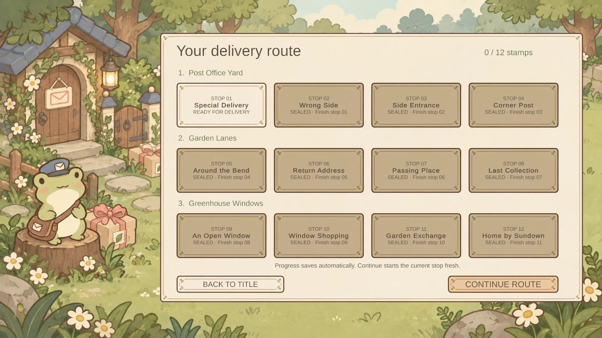

UNITY GAMES / EECS 494 · UNIVERSITY OF MICHIGAN
Small worlds.
Playful ideas.
Two game projects by Zach Gillespie: an original garden delivery puzzle and a recreation of classic Metroid with a custom grappling level.
EECS 494 / P2 GOLD · ORIGINAL PUZZLE GAME
Swap Courier
A little frog. A special parcel. A change of place.
Walk, push, and trade places with a ribboned parcel along a clear row or column. Deliver it to the doorstep, then find your own way home. Twelve compact puzzles turn a simple exchange into a game about positioning, staging, and leaving yourself a route out.
By Zach Gillespie · Individual coursework project
Windows 64-bit and Mac players · No timers or lives · Unlimited undo

MY CONTRIBUTIONS
From rule to route
I developed the game concept and shaped the puzzle progression, controls, interface, and garden presentation. I worked on the swapping and delivery systems, level layouts, saved progress, hints, audio, and overall polish, using OpenAI Codex for implementation and testing assistance and GPT Images for the original artwork.
TECHNOLOGY
A compact Unity game
Built in Unity 6 (6000.3.23f1) with C#, the Universal 2D Render Pipeline, the Input System, and a Canvas-based interface. A small grid model drives movement, pushing, sightline swaps, and undo. Progress and best records save locally; music, ambience, and effects are synthesized in game.
THE DELIVERY ROUTE
Twelve small discoveries
Three chapters move from the Post Office Yard through Garden Lanes to Greenhouse Windows. The stamp book lets you return to unlocked deliveries and improve your records. Each room has two optional hints and a little thank-you from its recipient.

KEYBOARD CONTROLS
- Arrow keys / WASD — walk and push
- Space — swap; advance after a completed delivery
- Z / Backspace — undo
- R — restart the current delivery
- H — reveal the observation hint, then the strategy hint
- Escape — pause / return
- Tab / Shift+Tab, Enter — select and activate menu controls
Mouse buttons are also available. Music/garden and effects volumes can be adjusted separately in Settings.
PLAY
Start your first delivery
- Download and extract the Swap Courier ZIP.
- Windows: open
Windows/SwapCourier.exe, keeping the accompanying folders and files beside it. - Mac: open
Mac/SwapCourier.app. - Choose Start Delivery. Bring the parcel to D, then move the frog to EXIT.
The Mac bundle is provided but has not been launch-tested on macOS.
CREDITS
The Little Garden Post
Original garden illustrations generated with OpenAI GPT Images. Gameplay, interface, puzzles, and original synthesized audio developed with Codex assistance. The game also uses the EECS 494 course EventBus and Unity TextMeshPro resources. Full credits are included in the download.
Also on this page: Metroid · P1 Gold ↓EECS 494 / P1 GOLD · UNIVERSITY OF MICHIGAN
Metroid
A Unity recreation of classic Metroid with a separate custom level built around a grappling mechanic. Both levels are included in the same game download.
By Zach Gillespie · Team coursework project
84.4 MiB · Windows 64-bit · Mac for Intel and Apple Silicon
MY CONTRIBUTIONS
What I worked on
I worked on gameplay programming and enemy behavior, player animation and sound, the title screen, and integration of the custom grappling mechanic. I also helped test and debug the game, connect the classic and custom levels, and prepare playable Windows and Mac builds. Development included AI-assisted implementation and testing.
TECHNOLOGY
How it was built
The game uses Unity 6 (6000.0.32f1), C# scripts, the Universal Render Pipeline, sprite-based animation, Unity physics, and a Canvas-based interface.
The custom level adds a grappling tool for attaching to surfaces, swinging, adjusting rope length, and releasing into a jump.
PLAY
Start the game
- Download and extract the ZIP.
- Windows: open
Windows/MetroidP1Gold.exeand keep its accompanying files and folders beside it. - Mac: open
Mac/MetroidP1Gold.app. - Press Enter at the title screen. Press the number-row 4 key during gameplay to switch between the classic and custom levels.
Windows startup and level switching were tested. The Mac app bundle was checked but has not been launch-tested on macOS.
KEYBOARD CONTROLS
- Arrow keys / WASD — move and aim
- Z / comma — jump; hold for a higher jump
- X / period — fire
- Space — switch beam and missiles after pickup
- Down / S — Morph Ball after pickup; Up / W to stand
- C — toggle grapple mode after pickup
- In grapple mode: hold X to attach, release X to detach; A/D to swing and W/S to adjust rope length
- 4 (not numpad) — switch levels
- 1 — toggle invincibility and infinite missiles
CREDITS
Non-commercial student coursework for EECS 494 at the University of Michigan. Metroid and the original game artwork and music are © Nintendo. Sprite resources include course-provided assets and rips from The Spriters Resource. The public download contains the game builds.